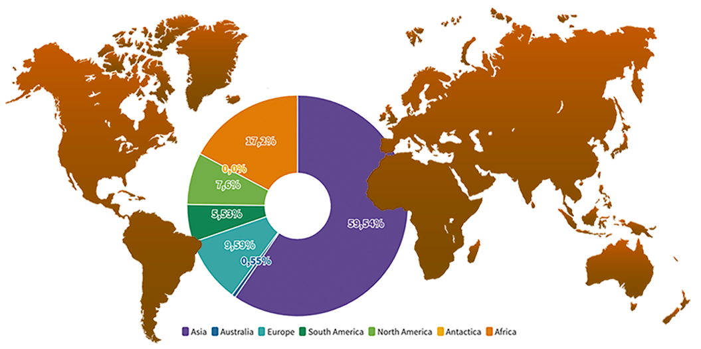

Statistikker om befolkningstal og befolkningstæthed er relevante, når man
vil forstå sig på samfund og levevilkår.
Vi har derfor valgt at vise forskellige infografikker på dette site, der giver et indblik i nogle af disse
statistikker.
Verdens befolkning fordelt på kontinenter

Top 20-oversigt over de mest befolkede lande i verden
Befolkningstilvækst fordelt på kontinenter 1920-2020
Population i DK fordelt på alder og køn i 1. kvartal af 2021.